Introduction to the Principles of Design
Concept
The fundamental structural rules and psychological guidelines used by creators to organize the raw elements of art and visual design.
Purpose
To transform chaotic visual noise into effective, intuitive, and visually captivating layouts across media, websites, games, and digital interfaces.
Classroom Checkpoint: Spot the Difference
Look at the two websites on the right. What is the very first thing that causes cognitive friction on the left layout?
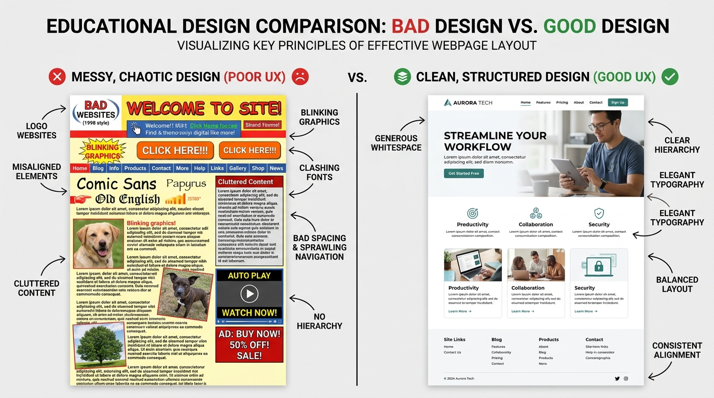
Visual Balance
Concept
The deliberate distribution of visual weight within a composition to evoke stability, equilibrium, or intentional tension.
The 3 Core Types
- Symmetrical Balance: Equal visual weight mirrored across a central axis (dignified, formal, dependable).
- Asymmetrical Balance: Unequal elements that counterbalance each other through contrast in size, color, or density.
- Radial Balance: Visual elements radiating outward symmetrically or spirally from a single central anchor.
Classroom Checkpoint: Visual Weight Physics
On the right layout, how does the small photo balance out the massive headline block?
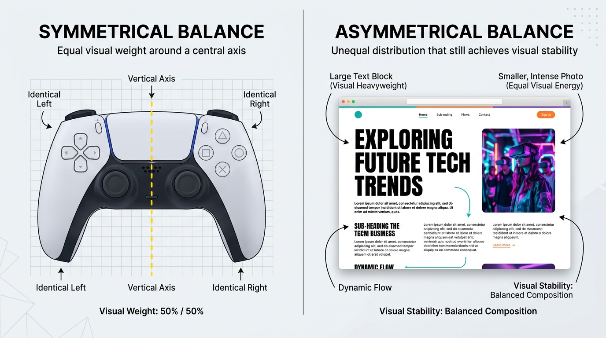
Design Unity
Concept
How seamlessly different elements of a design communicate and work together as a single, coherent, harmonized whole.
Purpose & Psychological Impact
Prevents the composition from feeling fragmented, disconnected, or chaotic. Fosters psychological trust and professional polish in digital tools.
Classroom Checkpoint: UI Consistency Check
Can you identify the 3 specific styling parameters that repeat across all components on this dashboard?
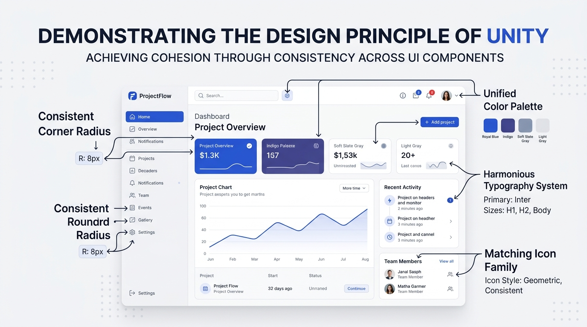
Visual Contrast
Concept
The juxtaposition of opposing visual qualities: deep darks against vivid lights, rough surfaces against glassy planes, or bold heavy shapes against delicate line art.
Purpose & Engagement
Instills excitement, establishes clear readability, breaks monotony, and ensures essential interactions jump out effortlessly to the user.
Classroom Checkpoint: The 3-Second Test
Close your eyes for 2 seconds, open them, and look at the image. Where did your gaze lock onto instantly?
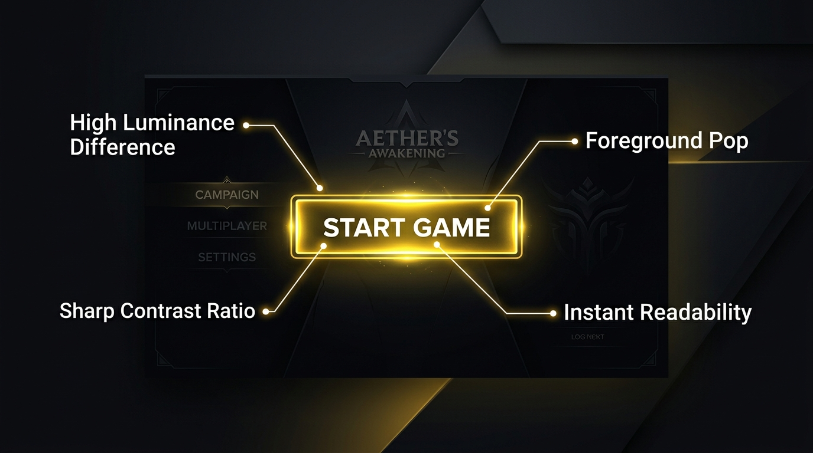
Focal Point & Emphasis
Concept
The primary focal point of a visual composition; the specific zone or hero element engineered to command the viewer's immediate attention.
Purpose
Eliminates viewer hesitation by dictating exactly where the eye must land first before exploring secondary supporting details.
Classroom Checkpoint: Spotlight Anatomy
Name three distinct techniques the artist used to make the central warrior dominate this cinematic poster.
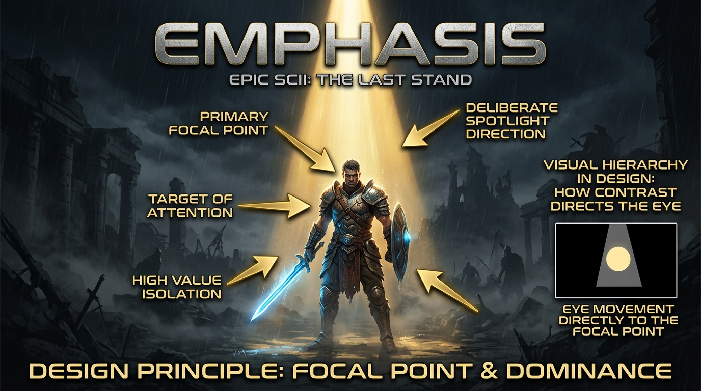
Repetition (Replay)
Concept
Reusing identical or closely related visual elements—colors, motifs, fonts, shapes, or grid spacing—throughout a layout or brand ecosystem.
Purpose & Familiarity
Builds instant structural consistency, reinforces brand identity, and reduces the user's cognitive learning curve through predictable repetition.
Classroom Checkpoint: Mobile UX Muscle Memory
Why do popular apps always keep their bottom navigation icons identical in style across every subpage?
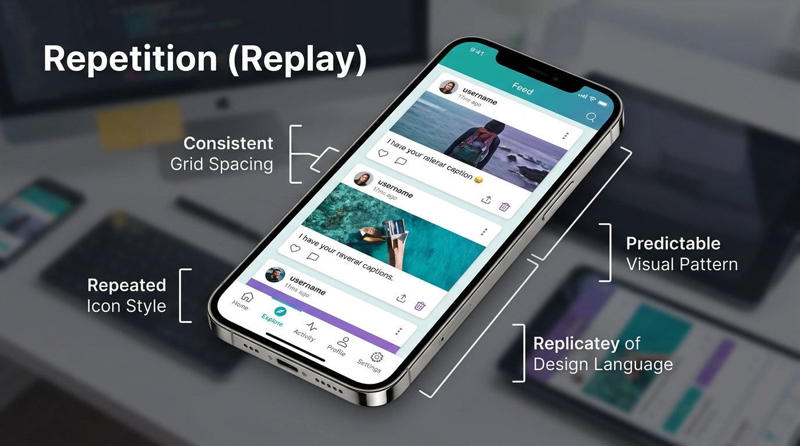
Visual Pattern
Concept
A calculated, regular arrangement of alternating or repeated geometric or organic motifs across a surface or canvas.
Purpose
Adds tactile texture, rich atmosphere, and environmental depth without overpowering the foreground focal content.
Classroom Checkpoint: Tile Map Logic
How do 2D video game creators build gigantic lush game worlds using just a few repeating patterns?
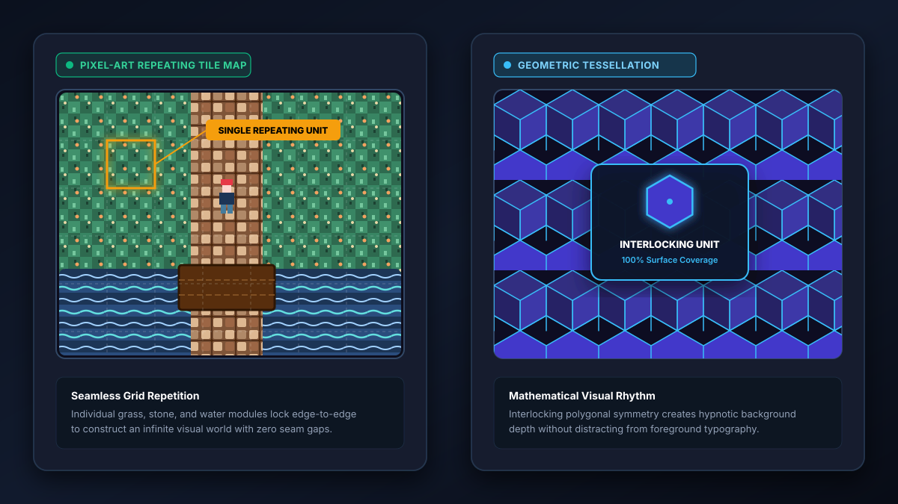
Visual Rhythm
Concept
A visual tempo, pulse, or cadence generated by modulating the intervals, scale, and spacing of repeated elements across space.
Purpose
Suggests organized musical movement, controls reading pace, and keeps the viewer's subconscious actively engaged across large canvases.
Classroom Checkpoint: Visual Music
Notice how the columns on the right transition from left to right. What happens to the "tempo"?
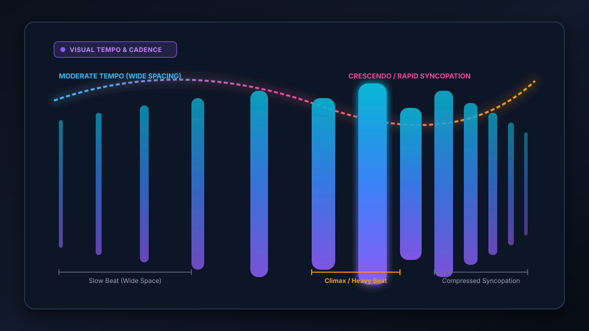
Eye Movement
Concept
The intentional path the viewer's eye takes as it travels through an artwork, interface, or editorial narrative.
Purpose
Guides the user through a deliberate sequence of information—ensuring they digest the headline, understand the context, and arrive at the intended action.
Classroom Checkpoint: Visual Pathfinding
Trace the curved neon path on the right. How does the curve prevent the user from bouncing off the page?
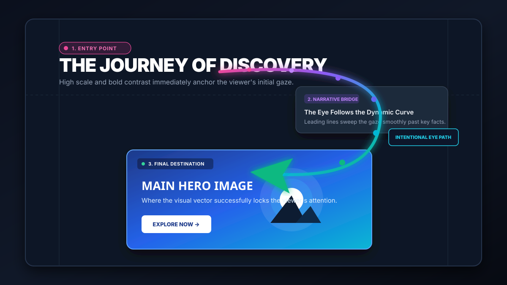
Proportion & Scale
Concept
The comparative relationship of sizes, dimensions, and quantities between various elements and the overall composition.
Purpose
Dictates visual hierarchy and reading priority. Establishes immediate clarity on what is essential, what is supportive, and what is supplemental.
Classroom Checkpoint: Typographic Scale
What would happen if the headline, subheading, and body text were all formatted at the same 28px font size?
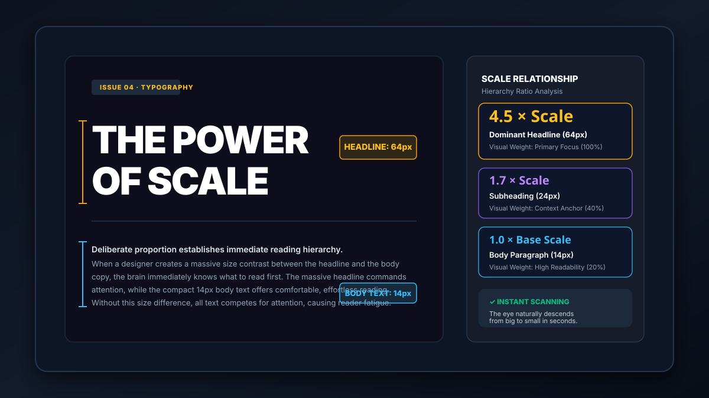
Visual Harmony
Concept
The visually satisfying, soothing effect created by blending similar, related elements and tonal families into natural accord.
Purpose
Creates a tranquil atmosphere of visual agreement, emotional calm, and professional stability, minimizing visual fatigue.
Classroom Checkpoint: Monochromatic Power
Why do enterprise and banking platforms frequently favor monochromatic palettes over high-contrast rainbow palettes?
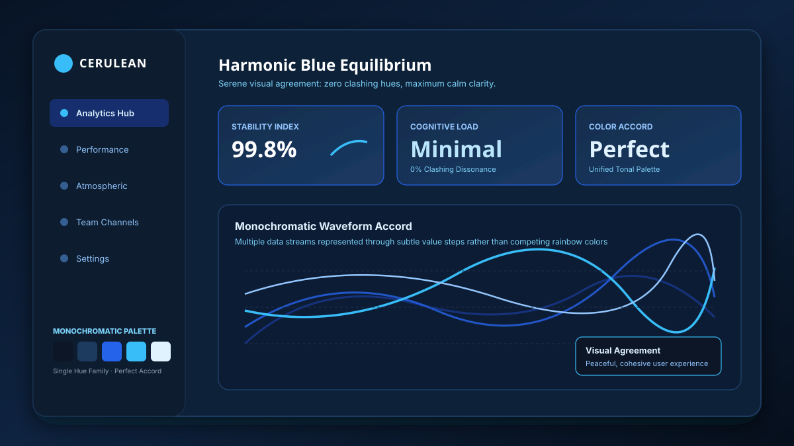
Visual Variety
Concept
The deliberate use of diverse visual elements—shapes, scales, orientations, colors, and textures—to hold the viewer's curiosity and attention.
Purpose & The Unity Partnership
Prevents monotony and boredom. Variety excites the viewer's eye, while Unity provides the foundational discipline that prevents chaos.
Classroom Checkpoint: Controlled Variety
Look at the bento grid. It has 7 different colors and shapes, yet it feels organized. What keeps it together?
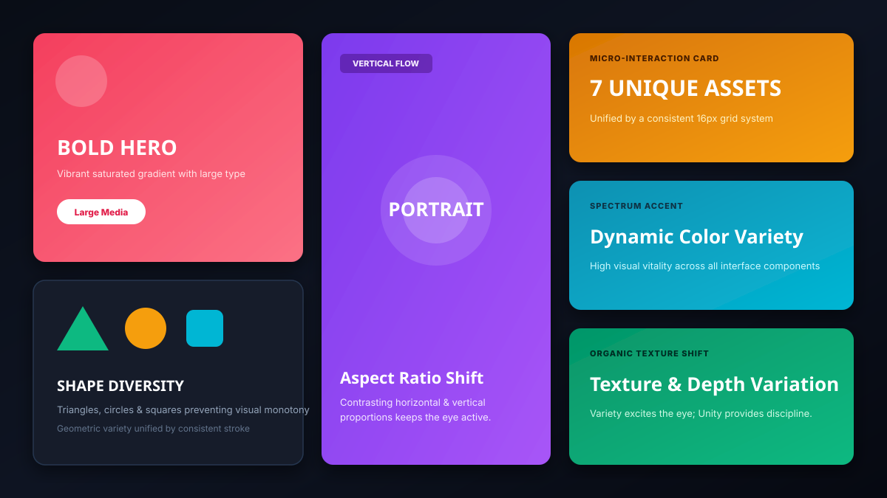
Conclusion: Design is Intentional
Concept
Great design never happens by accident. Every line, space, color choice, and scale contrast is an intentional decision made to solve a visual challenge.
The Final Takeaway
Mastering these principles elevates standard visual elements into a professional, emotionally engaging, and world-class product.
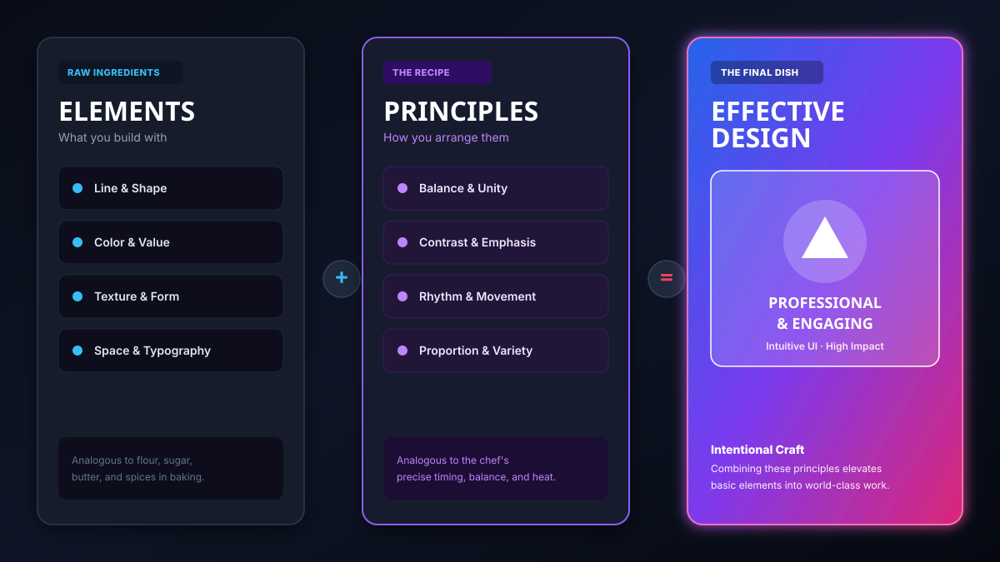